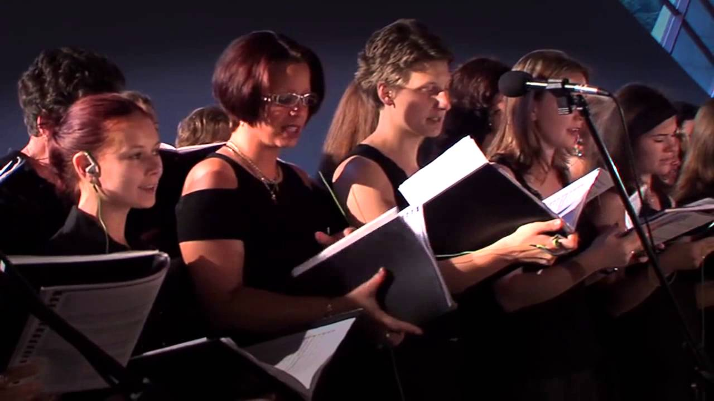
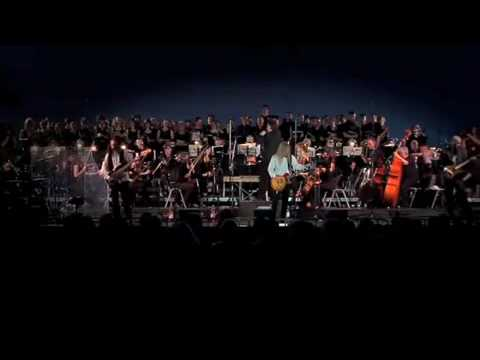
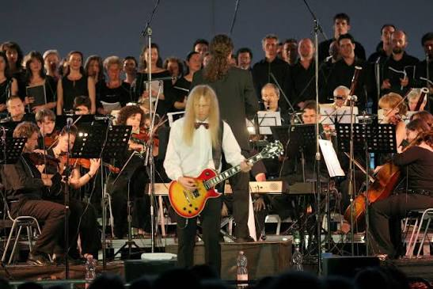
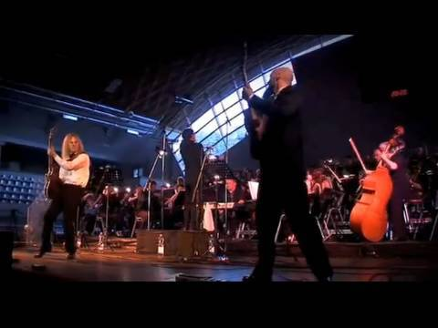
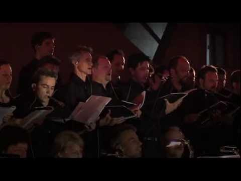
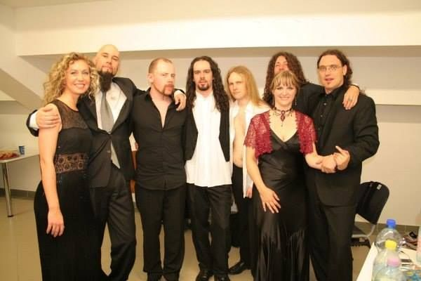

Onde estão as guitarras?
Não procure.
Elas ainda não chegaram.
E talvez essa seja a melhor maneira de começar uma história sobre metal sinfônico.
Porque existe uma maneira preguiçosa de explicar o gênero: guitarra pesada, bateria, baixo, alguma orquestração por cima e uma voz grandiosa no centro.
Está correto.
E não explica droga nenhuma.
Antes de entender o que acontece quando o metal encontra a orquestra, você precisa ouvir a orquestra sem o metal.
Então faça uma coisa.
Não espere o riff.
Não espere bateria entrando como uma locomotiva.
Não procure aquela parede de guitarras que normalmente avisa ao ouvido: “você está numa banda de metal”.
Primeiro escute o outro mundo.
Therion — The Miskolc Experience · Part 1
A colisão.
Agora chegaram guitarras, baixo e bateria.
E aqui começa a pergunta realmente interessante.
Quem vai sair da frente?
A orquestra?
A banda?
O coro?
A voz solista?
Ninguém.
Esse é o ponto.

Therion — The Miskolc Experience · Part 2
Não me diga apenas “Therion”.
Banda não é logotipo.
Banda é gente.
E se você vai ouvir esse palco como o Mr. Nomad quer, precisa começar a enxergar quem está fazendo cada parte daquela máquina funcionar.
Não saia daqui conhecendo apenas o nome da banda. Procure as pessoas.
Christofer Johnsson
Se existe um nome sem o qual esta história simplesmente não acontece, é Christofer Johnsson.
Fundador do Therion, compositor, guitarrista e arquiteto de grande parte da linguagem musical que transformou a banda ao longo das décadas, Johnsson é também uma excelente demonstração de por que reduzir um músico ao instrumento que aparece em sua ficha é uma péssima ideia.
Guitarra é uma parte da história.
Voz também foi.
Composição, arranjo, direção musical e a própria concepção de como elementos aparentemente distantes poderiam coexistir dentro do Therion completam uma imagem muito maior.

Uma banda que aprendeu a mudar
O Therion que chegou ao universo sinfônico não nasceu pronto.
Antes das grandes orquestrações, dos coros monumentais e das vozes líricas que se tornariam parte de sua identidade, existiu uma banda muito mais próxima do death metal.
E isso importa.
Porque The Miskolc Experience não é o resultado de alguém simplesmente decidir colocar cinquenta músicos atrás de amplificadores.
É consequência de uma transformação musical construída durante anos.
O peso não desapareceu.
Ele aprendeu outro vocabulário.
O Therion não abandonou o metal para encontrar a música clássica. Aprendeu a fazer os dois ocuparem a mesma frase.
Antes da orquestra havia outra criatura.
Volte para a Suécia do fim dos anos 1980.
Antes de existir o Therion que hoje associamos a coros, sopranos, tenores, orquestrações e estruturas monumentais, havia uma banda jovem procurando sua própria linguagem dentro do metal extremo.
A trajetória passa pelo nome Blitzkrieg, depois Megatherion, até chegar a Therion — nome ligado a uma referência que já apontava para algo maior do que simplesmente mais uma banda de death metal.
Os primeiros discos pertencem a outro território sonoro.
O que torna a história fascinante é justamente acompanhar o momento em que aquela criatura começa a ganhar novas partes.
Teclados aparecem.
Arranjos se expandem.
Vozes deixam de obedecer a uma única tradição.
Elementos clássicos deixam de ser decoração e começam a interferir na própria estrutura das composições.

Theli.
Então chegamos a 1996.
E aqui é impossível passar correndo.
Theli tornou-se um dos pontos fundamentais para compreender a identidade que o Therion desenvolveria.
Não porque tenha inventado sozinho a aproximação entre metal e música clássica.
A história é muito mais interessante — e muito menos conveniente — do que entregar a invenção inteira de um gênero a uma única banda.
Mas porque no Therion essa aproximação deixou de parecer visita.
Começou a parecer endereço.
Quando a orquestração deixa de ser efeito e passa a participar da composição, alguma coisa mudou.
E essa diferença é essencial para entender por que anos depois uma experiência como Miskolc faria sentido.
Agora coloque todo mundo no palco.
Banda. Orquestra. Coro. Solistas.
E retire a rede de segurança.
Em estúdio você pode construir uma parede sonora camada por camada.
Ao vivo, dezenas de pessoas precisam respirar dentro do mesmo tempo.
Essa é uma das razões pelas quais The Miskolc Experience é tão interessante para esta história.
O concerto aconteceu no Miskolc International Opera Festival, na Hungria, em 2007, colocando o Therion diante de uma estrutura musical muito maior do que a formação convencional de uma banda.
O projeto seria posteriormente lançado como The Miskolc Experience.

Não é banda + fundo.
Esse detalhe muda tudo.
Quando uma orquestra é usada apenas para preencher o fundo, o ouvido percebe duas estruturas:
a banda na frente;
e alguma coisa bonita acontecendo atrás.
Aqui queremos que você tente ouvir de outra maneira.
Procure relações.
Uma frase começa em determinado grupo instrumental e encontra resposta em outro.
Uma voz individual cresce e encontra o coro.
O peso da banda aparece e a massa orquestral muda sua dimensão.
E às vezes acontece o contrário: a banda recua porque a música precisa de espaço.
As vozes não estão ali para enfeitar.
No metal sinfônico, “vocal” pode significar coisas completamente diferentes dentro da mesma composição.
Voz masculina.
Voz feminina.
Técnica lírica.
Voz popular.
Coro.
Contraponto.
Uníssono.
Resposta.
Textura.

Uma soprano não é simplesmente “uma voz mais aguda”. Um coro não é simplesmente “muita gente cantando”.
O efeito emocional vem justamente da maneira como registros, timbres e volumes diferentes são colocados uns contra os outros.
É por isso que algumas passagens parecem íntimas mesmo diante de um palco enorme.
E outras parecem grandes demais para caber nele.
Tire os olhos do vocalista.
Só por alguns segundos.
Eu sei.
É difícil.
Nosso ouvido foi treinado durante décadas para seguir a voz principal.
Então faça exatamente o contrário.
Se você fizer isso, existe uma boa chance de descobrir que passou anos ouvindo algumas músicas sem realmente perceber metade delas.

A música não ficou mais complicada. Você apenas começou a enxergar as engrenagens.
Grande não significa sinfônico.
Cem músicos podem produzir barulho. Cinco podem produzir arquitetura.
Essa talvez seja a distinção mais importante para levar daqui.
Metal sinfônico não é definido simplesmente pela quantidade de pessoas no palco.
Nem pela presença de violinos.
Nem por uma soprano.
Nem por teclados imitando uma orquestra.
Nem pela capacidade de fazer uma música parecer enorme.
O ponto realmente interessante aparece quando linguagens diferentes deixam de disputar espaço e começam a participar da mesma construção.
Orquestração não é tamanho. É função.
Uma guitarra pode carregar a melodia.
Depois entregá-la às cordas.
O coro pode assumir aquilo que antes pertencia a uma única voz.
A bateria pode sustentar o peso enquanto a percussão orquestral altera completamente sua dimensão.
E o silêncio pode ser tão importante quanto todos eles.
É nesse ponto que The Miskolc Experience deixa de ser apenas “Therion tocando com uma orquestra”.
A experiência passa a mostrar, diante dos nossos olhos, o princípio que sustenta boa parte da linguagem que estamos tentando entender.
Agora escute novamente.
Os vídeos não mudaram.
Você mudou a maneira de ouvi-los.
Volte ao primeiro.
Aquele em que pedi para você esquecer as guitarras.
Depois volte ao segundo.
Só que agora você já sabe o que procurar.
É aí que um arranjo deixa de ser uma pilha de instrumentos.
E começa a virar linguagem.
Isto não termina em Miskolc.
Na verdade, acabamos de abrir a porta.
Porque uma vez que metal e linguagem sinfônica aprenderam a dividir o mesmo espaço, músicos diferentes começaram a responder à mesma pergunta de maneiras completamente diferentes.
Alguns procuraram peso.
Outros procuraram beleza.
Alguns encontraram o teatro.
Outros encontraram o cinema.
Houve quem levasse essa linguagem para territórios mais sombrios.
Houve quem colocasse velocidade, fantasia e virtuosismo no centro dela.
E é exatamente para esse último lugar que vamos agora.
Se Therion nos mostrou o que acontece quando o metal aprende a conversar com uma orquestra, a próxima viagem pergunta: até onde essa conversa pode crescer?
Itália.
Power metal.
Orquestrações cinematográficas.
Fantasia.
Velocidade.
Coros.
Guitarras.
Teclados.
E algumas melodias capazes de fazer uma pessoa esquecer completamente que entrou aqui apenas para procurar um vídeo.
Próximo destino: Rhapsody of Fire.
Mas não ainda.
Primeiro deixe Miskolc terminar.
Música boa não precisa ser atropelada pela próxima música.
Every Song Is A Destination.
A Passport Radio é um arquivo editorial dedicado às histórias, pessoas, lugares, movimentos e acontecimentos que existem por trás da música.
Aqui a música não é tratada como fundo.
É documento.
É memória.
É destino.